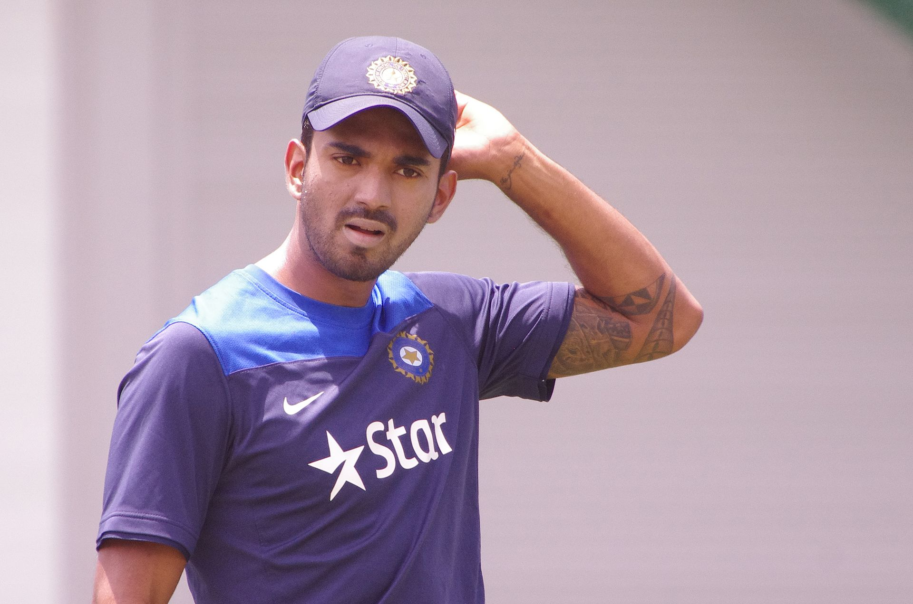
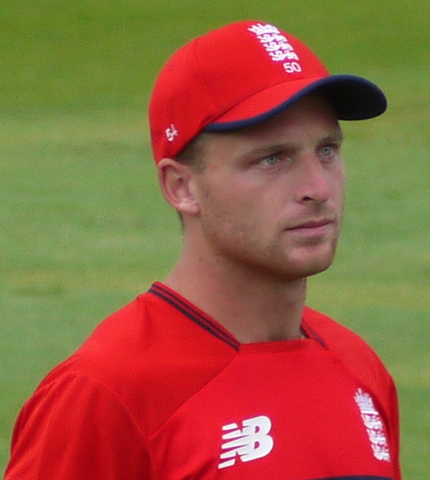

CRICKET PLAYERS
|
| S.NO. |
PICTURE |
ABOUT |
| 1. |
 |
Kannaur Lokesh Rahul (born 18 April 1992) is an Indian
international cricketer who currently is the vice-captain of the
India national cricket team in all formats. He plays for Karnataka
in domestic cricket. He is the current captain of Lucknow Super
Giants in the Indian Premier League. In the second test against
South Africa in January 2022, Rahul captained India for the first
time in test cricket and became the 34th Test captain of India.
Rahul made his international debut in 2014 and scored his maiden
Test century in his second Test match. He was the first Indian to
score a century on men's One Day International debut, and the third
Indian cricketer to score a century in all three formats of
international cricket.
|
| 2. |
 |
Virat Kohli born 5 November 1988) is an Indian international
cricketer and former captain of the India national cricket team. He
plays for Delhi in domestic cricket and Royal Challengers Bangalore in
the Indian Premier League as a right-handed batsman. He is often
considered one of the best batsmen of his era and some critics believe
him to be one of the best limited-overs batsmen in history. Between
2013 and 2022, he captained the India cricket team in 213 matches
across all three formats. With 40 wins out of 68 matches, though
mostly winning at home, Kohli is one of the most successful Indian
Test captains
|
| 2. |
 |
Joseph Charles Buttler MBE (born 8 September 1990) is an
English cricketer who is the current vice-captain of the England One
Day International (ODI) and Twenty20 International (T20I) teams and
plays for the England Test team. He is considered one of the best
white-ball batsmen in the world.In domestic cricket he represents
Lancashire, having previously played for Somerset, and has played in
multiple Twenty20 leagues, including for Mumbai Indians and Rajasthan
Royals in the Indian Premier League.
|